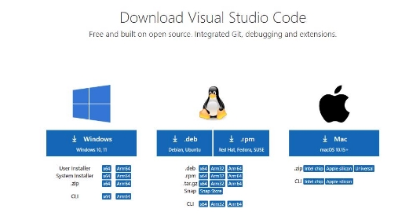

-
Descargar el Visual Studio Code desde la siguiente URL:

- Luego Instalar el Visual Studio Code.
-
Después de instalar abrir Visual Studio Code ir a la barra lateral izquierda y pulsar el icono de extensiones buscar java e instalar Extension Pack for Java.

-
En la ventana de bienvenida de Visual Studio Code pulsar en la esquina inferior derecha el enlace de Más… y seleccionar Get Started with Java Development.

-
Luego pulsar el botón Install el JDK (Java Development Kid), y seleccionar 17 (LTS) y pulsar el botón Download (Descargar).
-
Al terminar la descarga ir a la carpeta de descargas e instalar OpenJDK17

-
Descarga Git para Windows desde la siguiente URL:

-
Instalar Git para Windows.
-
Descarga el SDK Flutter para Windows desde la siguiente URL:


-
Descarga Android Command Tools para Windows desde la siguiente URL:

-
Crea un directorio en tu unidad C: y colócale el nombre de Android
- C:\Android
-
Extrae el archivo ZIP del SDK de Flutter en la carpeta C:\Android, en una subcarpeta llamada flutter la ruta completa se ve así:
- C:\Android\flutter
-
Instala las Android Command Tools. Antes de extraer el archivo ZIP, crea una carpeta dentro de C:\Android con el nombre cmdline-tools, el directorio se ve así:
- C:\Android\cmdline-tools
-
Dentro de ese directorio extrae el ZIP y renombra la carpeta extraída a tools, el directorio se ve así:
- C:\Android\cmdline-tools\tools
-
Configure algunas variables de entorno:

- ANDROID_HOME
- En el Path de variables de usuario o variables de sistema crear:
- En el Path de variables de usuario o variables de sistema crear:

-
Para conocer Android API Levels visite la siguiente URL:
-
Descarga el SDK de Android. Para que Flutter funcione necesitamos instalar el SDK de Android y las API Levels, ejecute los siguientes comandos en la ventana de símbolo del sistema:
- sdkmanager “system-images;android-33;default;x86_64”
- sdkmanager “platform-tools”
- sdkmanager “build-tools;33.0.0”
- sdkmanager “platforms;android-33”
- sdkmanager emulator
- Configurar la ruta del SDK para Flutter.
-
Configurar la ruta del SDK para Flutter.
- flutter config --android-sdk C:\Android\
-
Abrir Visual Studio Code buscar y descarga la extensión Flutter y Awesome Flutter Snippets.

-
Descargar el Visual Studio Build Tools desde la siguiente URL:
- https://visualstudio.microsoft.com/es/downloads/
- Buscar en la parte de debajo de la página. Herramientas para Visual Studio y descarga Build Tools para Visual Studio 2022.

-
Instalar vs_BuildTools

-
Ejecución de Flutter Doctor. Ejecuta este comando:
- flutter doctor –v
-
Si en este paso aún no se han aceptados las licencias utiliza el siguiente comando:
- flutter doctor --android-licenses
- presione y luego Enter para cada licencia.
Este comando te da una tilde verde para indicar lo que tienes instalado y listo para usar.
Nota: Personalmente prefiero ejecutar una aplicación para Android en un dispositivo físico si tu pc tiene bajas especificaciones o si necesitas construir la aplicación rápidamente porque en el emulador tu PC consumirá mucho R.A.M mientras ejecute el emulador y será muy lento el desarrollo.
Extra: En tu Smartphone tienes que ir a Configuración activar las opciones de desarrollador. Después activar la Depuración USB. Luego activar Instalar vía USB y por ultimo desactivar Verificar aplicaciones por USB. Para usar tu Smartphone como dispositivo físico.